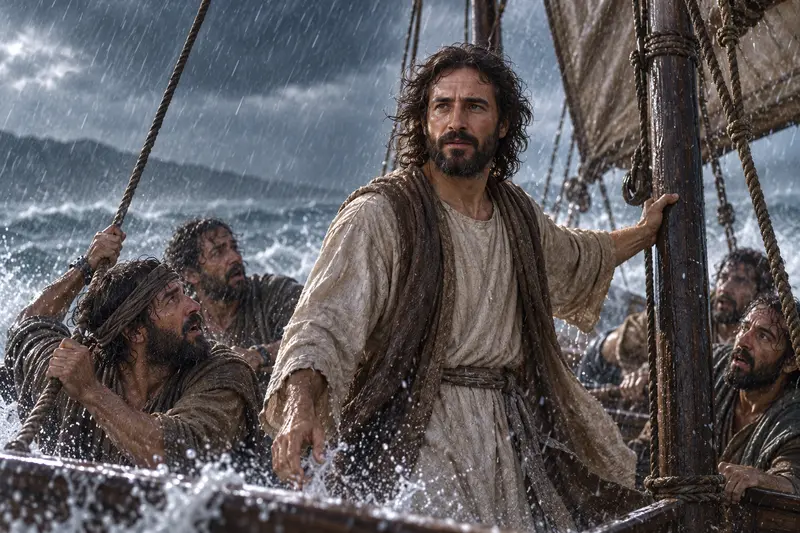
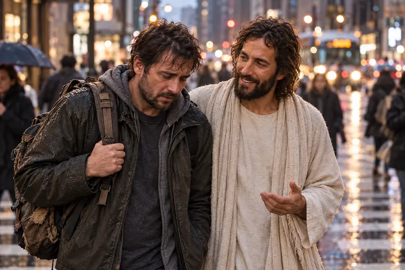
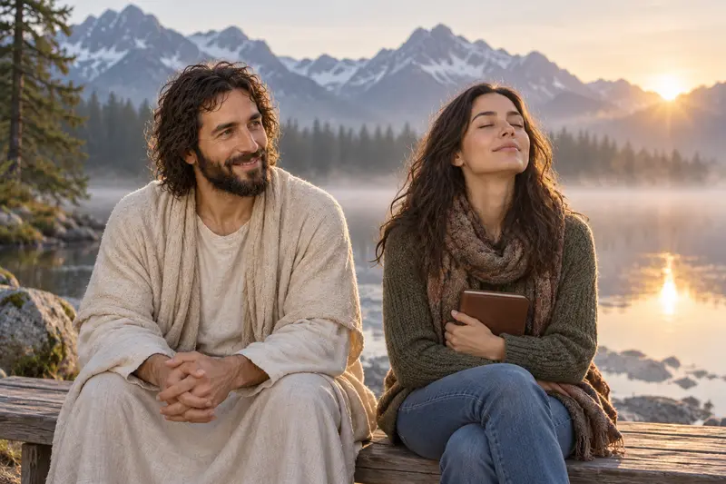
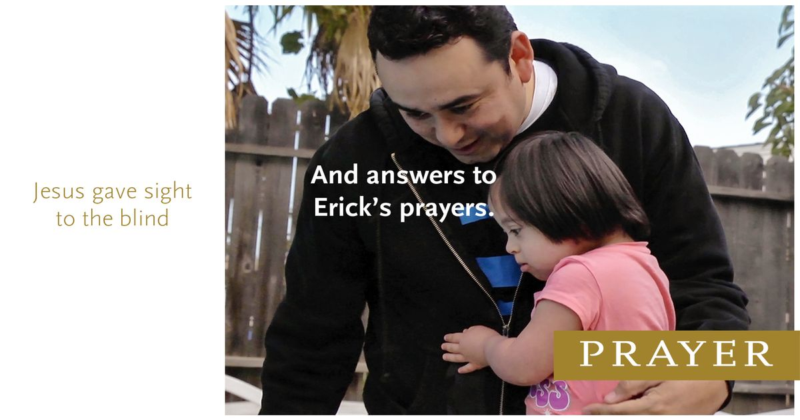

Notice the burdened posture of the man and the Savior's steady place beside him.
Christ walks shoulder to shoulder with a burdened man while the city rushes around them. “Be still” becomes more than escape from noise. It becomes the courage to recognize who walks beside us.
A path through this study
Find Christ in the Press of the Day
The man in the artwork has not stepped outside modern life. Cars, buildings, and other people remain close. Yet Christ is closer. Begin there, then read Psalm 46 in its full setting of shaking earth, roaring water, and unsettled nations.
Hear “be still” inside a psalm about refuge, upheaval, and God's presence.
Choose one faithful action for today and one outcome you can entrust to God.
Scripture study
Stillness in the Middle of Upheaval
Psalm 46 opens with God as refuge and strength. The earth moves, waters roar, and kingdoms shake. The invitation to be still comes near the end, after the psalmist has described God bringing conflict to an end. Biblical stillness is not denial. It is a reorientation toward the God who remains present when the world feels unstable.
The Lord repeats the invitation in Doctrine and Covenants 101:13-17. Here too, comfort comes to people living through distress. The command and promise belong together: be still, and know that He is God.
Peace with the storm still close
In Mark 4:35-41, frightened disciples wake Jesus in a storm. He calms the sea and then asks about their fear and faith. John 14:27 adds a promise of peace that differs from what the world gives. Together, the passages invite us to seek Christ's presence without pretending every storm ends on our preferred schedule.
Look again
Peace That Walks with Us
These artworks do not all show quiet surroundings. They show companionship, trust, and release within real movement and strain.
{kind=link}

{kind=link}

{kind=link}

{kind=link}
Quiet reflection
Be Still, Then Walk Forward
Stillness can prepare the heart for faithful action. Open one prompt and stay with it for a few minutes.
What remains steady when life feels unsettled?
Read Psalm 46 and list what changes in the chapter. Then list what the psalm says about God. Let the contrast shape a short, honest prayer.
What can I do, and what can I entrust to God?
Name one responsibility you can act on today. Then name one outcome you cannot control. Doctrine and Covenants 58:26-28 can help you hold agency and trust together.
Who could use a quiet companion?
The Savior in the artwork does not speak from across the street. Think of someone whose burden may need your presence more than your advice.
Watch, read, and reflect
A companion for your study
These official Church resources offer another way to explore this subject. Read or watch at your own pace, then return to the passages above.

Church video
Principles of Peace: Prayer #PrinceofPeace
Explore prayer as a way to seek the peace Jesus Christ promises.
The Church of Jesus Christ of Latter-day Saints
Church video
Finding Personal Peace
Listen for ways the Savior’s peace can be received and then passed to another person.
The Church of Jesus Christ of Latter-day Saints
Keep walking
Where Would You Like to Go Next?
Pray and Discern
Continue from stillness into prayer, careful listening, scripture, and responsible choice.
Faith During Trials
Study the Savior's help through hardship without promising a quick or simple ending.
Meet the Living Christ
Follow the One beside you into the Resurrection witnesses of John 20.